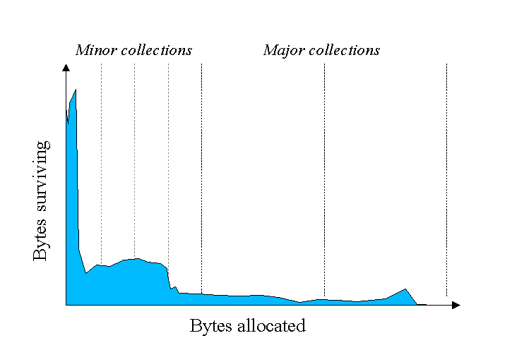
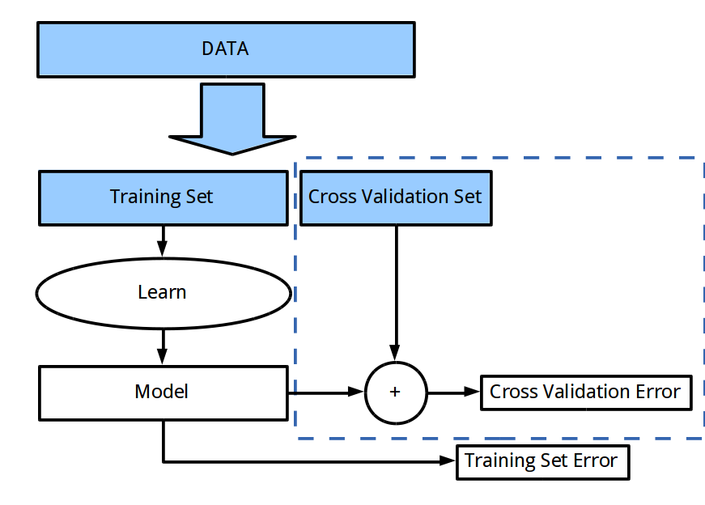

Are you better than a Coin Toss?
by John Oliver and Richard Warburton

Who are we?
- Why you should care
- The Fundamentals
- Practical Problems
- Applying the Theory
'Experts" aren't very good


Big Data solves ALL KNOWN PROBLEMS
Big Data solves ALL KNOWN PROBLEMS
... helps
Validation = Tests for Data
Part 1: Fundamentals
Null Hypothesis
Until proven otherwise there is no relationship between phenomena
Hypothesis: the loss of my socks is due to alien burglary
Null Hypothesis: the loss of my socks is nothing to do with alien burglary
Refuting The Null Hypothesis is to present evidence that there is a relationship
When you hear "Wolf!" there is a wolf nearby
|
Cry "Wolf!" |
Stay Quiet |
| Wolf Nearby |
Ok |
False Negative |
| Its really a chicken! |
False Positive |
Ok |
Why is this important?
It is better that ten guilty persons escape than that one innocent suffer
- William Blackstone
Static Analysis


Cost benefit Analysis
- Costs a lot to jail an innocent man
- Costs very little to show someone an inappropriate house
- Credibility, Liberty, Morality are also costs
Choose the right measurement
Recall
number of true positives / number of actually true values
Precision
number of true positives / predicted true value
F Measure

Case Study: Memory Leaks
About ~10% of our dataset had memory leaks
Predict "never leaks memory" ~= 0.9 accuracy, but F1 = 0
Our algorithm ~= 0.9 accuracy and F1 ~= 0.9
Problem: Reliability of measurement
Richard's Rule of thumb: If it looks like random noise, it probably is random noise.
Solution: Check your data
Low standard deviation
Coefficient of Variation = Standard Deviation / Mean
Caveat: Non-normal distributons

Median Absolute Deviation
Problem: Experimental Flukes
Is your A/B testa heisen test?
Solution: P-Value
Science Works - B****es!
Part 2: Practical Problems
Part 3: Applying the Theory
Correlation
A measure of the strength of dependence between two variables
Pearson Correlation

Err...Just look it up
(Assumes linear relationship)
| Range | Strength |
|---|
| <0.4 | Weak/No Correlation |
| <0.7 | Some Correlation |
| >0.7 | Strong Correlation |

Correlation Strength: 0.78453
Machine Learning
Application of statistics to learn a relationship
Fitting

Fitting

Solution:
Cross Validation

Choose cross validation data wisely
Self Validating
Enemble methods - Train lots of weak classifiers and average
Random Forest and Bagging
Divide the data into bootstrap sets
Use the rest for calculating error
Monitor Production Data...It changes
Is it still the same data that you learnt with?
A/B Test new systems
Satisfaction/Profit/Traffic...
Learning Curves

How much is too much?